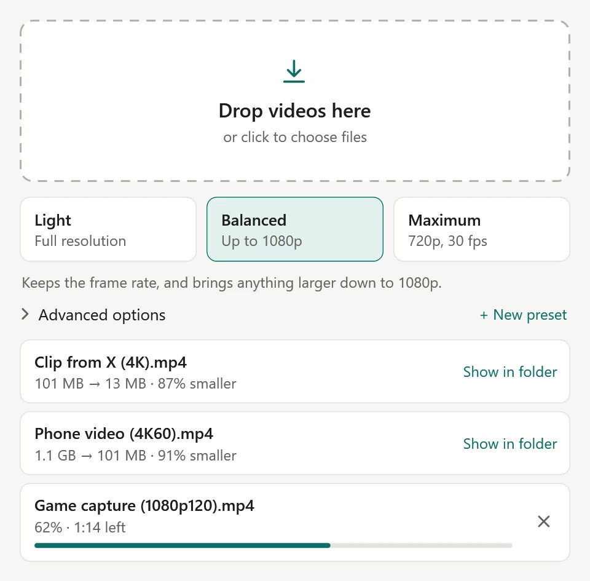
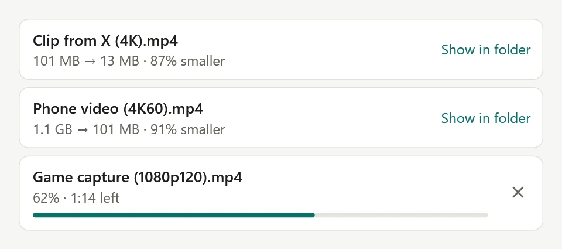
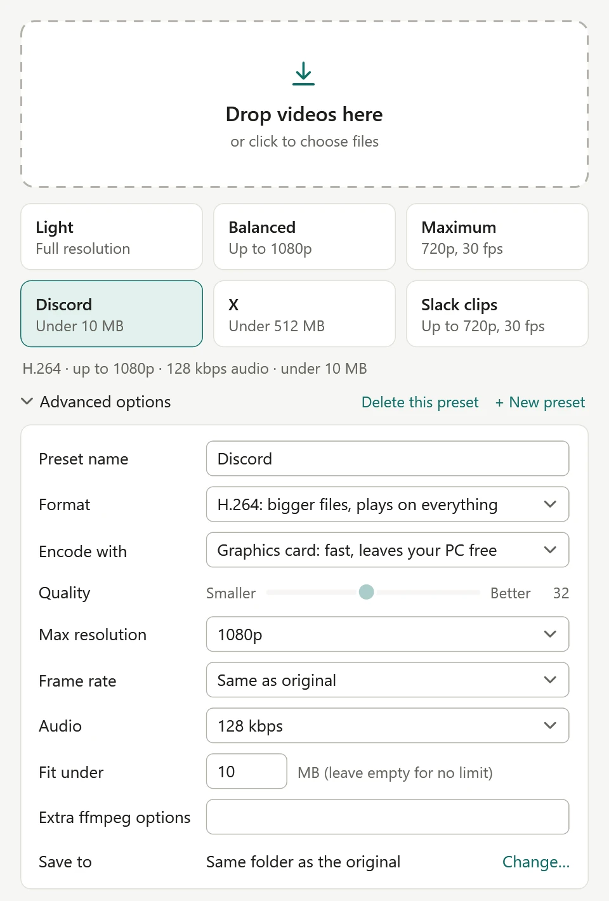

Free for Windows 10 & 11
Flyweight
Heavyweight videos. Flyweight files.
Drop a video in and get a smaller one out. Or right-click any video and pick a level. There's nothing to set up, and nothing left running afterward.
Download for Windows- 150 KB
- No account
- No admin rights
Flyweight runs on ffmpeg, the free engine behind many video tools. If you don't have it, Flyweight offers to install it. Windows may warn you the first time you run the download, so here's what to click.
The weigh-in
87% smaller. Picture score 94 out of 100.
A 100.6 MB 4K video downloaded from X, measured through the app. The score is VMAF, where 100 matches the original.

Two ways in
Drop it
Open Flyweight and drop videos or whole folders on the window. They queue up and run one at a time.
Right-click it
Select one video or a stack of them, right-click, and pick a level under Compress video. A small window shows progress in the corner without taking focus from what you're doing, then closes itself.
Your original is never changed. The smaller copy lands next to it as name_compressed.mp4.

The card
Every level compresses hard. They differ in what they keep. Light keeps full resolution and frame rate, Balanced brings anything bigger down to 1080p, and Maximum brings video down to 720p at 30 fps.
| Video | LightFull resolution | BalancedUp to 1080p | Maximum720p, 30 fps |
|---|---|---|---|
| Game capture1080p, 120 fps, 121 Mbps | 92% | 92% | 98% |
| OBS capture1080p, 60 fps, 33 Mbps | 84% | 84% | 95% |
| Phone video4K, 60 fps, 64 Mbps | 67% | 91% | 97% |
| Video from X4K, 30 fps, 13 Mbps | 61% | 87% | 93% |
| Vertical video from X1080p, 30 fps, 8 Mbps | 69% | 69% | 85% |
| OBS recording1080p, 30 fps, 4 Mbps | 66% | 66% | 86% |
| Downloaded video1080p, 60 fps, 5 Mbps | 39% | 39% | 81% |
Measured through the app with an RTX 5080. Your numbers depend on the video, and footage that's already been squeezed hard has the least left to give.
On a video that's 1080p or smaller, Light and Balanced give the same result. At full resolution, Light scored between 87 and 97 on VMAF, a picture-quality score where 100 matches the original.
Make weight
Every site has an upload limit. Click + New preset, name it, and set Fit under to the limit. It gets its own card in the app and its own entry in the right-click menu.
If a video can't make weight at its current size without looking terrible, Flyweight lowers the frame rate, then the resolution. Limits change, so Flyweight doesn't guess them. You set the number.
- Limit
- 5 MB
- Went in at
- 93 MB
- Came out at
- 4.56 MB
- Took
- 13 sec
A real run: a 5 MB preset, chosen from the right-click menu on an OBS capture.

Tale of the tape
A compressor should use your PC while it's compressing and leave it alone the rest of the time.
While it runs, Flyweight goes full speed at low priority, so anything you're doing still goes first. With an NVIDIA card it uses the graphics card's encoder chips, both of them on cards that have two.
Need more control? Advanced options covers format (H.265, H.264 or AV1), graphics card or processor, quality, resolution, frame rate, audio, and your own ffmpeg flags. Changes stick, and the right-click menu uses them too.
- The program
- 150 KB
- Running when you're not using it
- Nothing
- Starting with Windows
- Nothing
- Admin rights needed
- None
- Added to Explorer
- Menu entries only
- Videos uploaded anywhere
- None
- Speed, 1080p at 60 fps, RTX 5080
- About 10× real time
- Speed, 4K at 60 fps, RTX 5080
- About 3× real time
Fine print
Windows says it protected my PC. Is this safe?
Windows shows that warning for new programs that aren't signed with a paid certificate. Click More info, then Run anyway. The code is public on GitHub, and each release lists a SHA-256 checksum so you can check your copy.
What's ffmpeg, and do I need it?
ffmpeg is the free engine that does the compressing, and Flyweight uses the copy on your PC. If you don't have one, Flyweight offers to install it with Windows' own package manager. That takes about 550 MB of disk space.
Do I need an NVIDIA graphics card?
No, but it's a lot faster with one. On any other PC, including AMD and Intel graphics, Flyweight uses your processor, which takes longer and keeps your PC busier.
Where's the right-click menu on Windows 11?
Windows 11 keeps entries like this under Show more options. Holding Shift while you right-click goes straight there.
Does it send my videos anywhere?
No. Everything happens on your PC. Flyweight has no accounts, no ads and no tracking, and it never connects to the internet itself.
Which videos does it work with?
MP4, MOV, MKV, AVI, WMV, WebM, MPEG, FLV, TS and more. Results are always MP4. If a result wouldn't be smaller, your original is left as is and no new file is made.
Will my videos still play everywhere?
H.265, the default, plays on most recent phones, TVs and browsers, but some sites and apps still expect H.264. If a video won't play or upload somewhere, change Format to H.264 under Advanced options. Files come out about a third bigger, so it's a good choice for presets aimed at upload sites.
How do I remove it?
Use Apps & features in Windows, like any other program. Its menu entries and settings go with it, and your videos stay where they are.